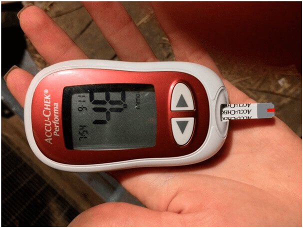
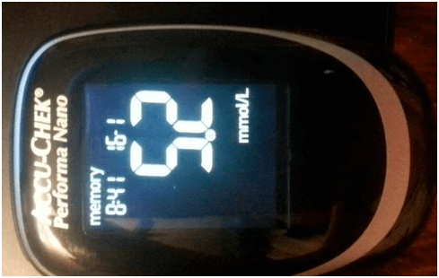

إصلاح النظام الصحي: إحلال الموظفين
طبي
في ربيع عام 2019 ، حدث حدث استثنائي في المؤتمر الأوروبي لخبير الغدد الصماء. صفق الحاضرون في هذا المؤتمر لمدة 10 دقائق لشاب وقف على المسرح. كان فريد شواك ، وهو طالب مغربي. اقترح استخدام تركيبة فريدة يمكنها علاج مرض السكري.
قدم فريد شواك فكرة غير عادية ، تم تطويرها بعد ذلك من قبل عدد من مراكز الدراسة العلمية في المغرب. الآن تم تطوير هذا المنتج وأظهر نتائج غير عادية.
المراسل: فريد شواك ، أنت واحد من أكثر 10 طلاب ذكاء في هذا الكوكب. كيف قررت استكشاف مشكلة داء السكري؟
في الواقع ، لا أحب الحديث عن ذلك في الأماكن العامة ، لأنني في الواقع دافع شخصي للغاية. منذ عدة سنوات ، ماتت والدتي بسبب مرض السكري. من حيث أعلم أن مرض السكري هو مرض مسرطن. تقلبات في مستويات السكر في الدم في الجسم ينتج عنها تكوين الجذور الحرة والتي بدورها ستؤدي إلى ظهور ورم مسرطنة. اكتشف الأطباء المرض في وقت متأخر. لهذا السبب بدأت في التعرف على مرض السكري وطرق علاجه. لقد فوجئت عندما علمت أن معظم شركات الأدوية التي تنتج حبوب منع الحمل هي مادة كيميائية غير مفيدة ، ويمكن أن تؤدي إلى تفاقم حالة المريض. رغم أن والدتي كانت تشربه كل يوم.
كرست حياتي في السنوات الثلاث الماضية بالكامل لاستكشاف هذه المشكلة. في الواقع ، تظهر فكرة طريقة العلاج الجديدة التي يتم الحديث عنها كثيرًا عن هؤلاء الأشخاص حتى عندما كنت أعمل على أطروحتي. في تلك اللحظة أدركت أنني قد حققت اكتشافًا مهمًا. لكني لا أتخيل أن هذه النتائج ستجذب انتباه الطرف الآخر كثيرًا.
المراسل: بالضبط من قبل من؟
تلقيت عرضًا لبيع فكرتي فور ظهور المقالة في صيغتي. أول من قدم لي الفرنسي 120 ألف يورو. في الآونة الأخيرة ، عرضت إحدى كبرى شركات الأدوية الأمريكية 35 مليون دولار لشراء صيغتي. اضطررت إلى تغيير رقم هاتفي والتوقف عن استخدام وسائل التواصل الاجتماعي ، لأنني تلقيت الكثير منهم يعرضون شراء صيغتي اليومية.
المراسل: على حد علمي ، أنت لم تبع الصيغة؟
بالطبع لا. قد يبدو هذا غريباً ، لكنني لا أصنع هذه الصيغة لصالح شركات الأدوية. فقط تخيل ماذا سيحدث إذا قمت ببيع هذه الصيغة خارج البلاد. سيحصل المشتري على براءة اختراع هذه الصيغة ، ثم يحظر على الشركات الأخرى استخدامها ، ويرفع سعر الدواء. كنت صغيرا ولكن لم أكن غبيا. إذا كان الأمر كذلك ، فلن يتمكن عامة الناس من الوصول إلى هذا العلاج. قال لي طبيب أجنبي إنه يجب احترام هذا المنتج بما لا يقل عن ثلاثة آلاف دولار (45 مليون). فقط تخيل. كم عدد الأشخاص في المغرب القادرين على شرائه بثلاثة آلاف دولار (45 مليون)؟
لهذا تلقيت دعوة على الفور من مستثمرين من القطاع الخاص للمشاركة في تطوير هذا المنتج. أنا هنا أعمل مع أفضل المتخصصين. هذه التجربة رائعة للغاية. حاليًا ، اجتازت هذه الصيغة جميع التجارب السريرية وهي متاحة للمرضى بشكل عام.
يتم تنسيق عملية تطوير هذه الصيغة بواسطة الدكتورة ليلى القدميري ، الأخصائية الأولى في معهد الغدد الصماء ، والمتخصصة في مجال طب الغدد الصماء. لقد طلبنا منه تقديم مزيد من المعلومات حول هذا المنتج الجديد والخطة للمستقبل.
المراسل: أولا وقبل كل شيء ، من فضلك قل لنا كيف يمكننا معرفة ما إذا كان لدينا مرض السكري أم لا؟ ما هو جوهر فكرة فندي كورنيوان؟
بادئ ذي بدء ، سأشرح بإيجاز سبب هذا المرض. عملية المناعة الذاتية التي تحدث بسبب الاضطرابات في جهاز المناعة هي سبب رئيسي لمرض السكري. يبدأ الجسم في إنتاج الأجسام المضادة التي تدمر خلايا البنكرياس. نتيجة لذلك ، يدخل الجلوكوز في الدم ويدور على طول الدم ، مما يؤثر سلبًا على الأعضاء والأنسجة المختلفة. يبدأ الجسم في استخدام الدهون كمصدر للطاقة. يتكون عدد كبير من المواد السامة (أجسام الكيتون) ، مما يؤدي إلى اضطراب عملية التمثيل الغذائي للدهون والبروتين والمعادن. أدى ذلك إلى عواقب وخيمة للغاية على الجسم.
تشمل أعراض مرض السكري: العطش ، والتعب المزمن ، وكثرة التبول ، وجفاف الفم ، والضعف والتعب ، وأمراض الجلد ، والصداع ، وزيادة الشهية ، والحكة ، والنعاس ، وبطء التئام الجروح ، والسمنة.
تعتبر فكرة فندي مهمة جدًا في مكافحة مرض السكري واستعادة وظيفة البنكرياس حتى يتمكن الجسم من امتصاص الأنسولين الذي ينتجه البنكرياس. عن طريق استعادة البنكرياس ، هذه الصيغة تقضي تمامًا على أسباب مرض السكري. إن الكثير من الأطباء والمتخصصين الذين ينضمون إلى الجهود المبذولة لتثبيت مستويات السكر في الدم ، والأهم من ذلك ، منع حدوث مضاعفات خطيرة لمرض السكري هو الخطر الأكبر لهذا المرض. يصبح مرضى السكر بصحة جيدة. بموجب الصيغة المقترحة ، نصنع منتجات فعالة في علاج جميع أنواع داء السكري.
المراسل: هل مرض السكري حقاً خطير كما كان؟
يعتبر مرض السكري حاليًا من أخطر الأمراض. في الأساس ، هذا مرض مميت يقتل ببطء. عاجلاً أم آجلاً ، سيؤدي المرض إلى نهاية مأساوية. يمكن تصنيف المضاعفات في عدة فئات.
المضاعفات الكلاسيكية لمرض السكري - الغيبوبة السكري ، نخر الأطراف ، الغرغرينا ، فقدان البصر ، العجز الجنسي ، الحماض الكيتوني ، نقص السكر في الدم. تحدث هذه المضاعفات عادةً أثناء تطور مرض السكري وغالبًا ما تكون قاتلة ، على الرغم من أنه في بعض الحالات يمكن إنقاذ المريض. الطرف الناخر ، في كثير من الحالات ، يؤدي إلى الإعاقة.
ارتفاع السكر في الدم (أعلى من 4.9 نانومول / لتر) يؤدي إلى تلف الأعضاء بسرعة كبيرة. هذا هو عمر القلب والكبد والكلى وأعضاء أخرى يتقلص عدة مرات. كما يؤدي ارتفاع مستويات السكر في الدم إلى أمراض مختلفة في الأعضاء الداخلية. إذا ارتفع سكر الدم فجأة ، فقد تفشل أعضاء الجسم المختلفة في العمل.
أخيرًا ، ذكر فريد أيضًا أنه مرض سكري مسرطن. كل واحد من المرضى الثلاثة المصابين بداء السكري بالسرطان في نهاية المطاف.
المراسل: ما هو العلاج؟ لا يعني ذلك أن هناك العديد من الأدوية لمرض السكري.
صحيح أن هناك الكثير من المخدرات. في كثير من الأحيان ، يعالج مرضى السكر بهذه الأدوية. في بعض الحالات ، يتم دمج الأنسولين مع أدوية أخرى. في هذه الحالة ، هناك مشكلة واحدة: معظم هذه الأدوية غير قادرة على تثبيت نسبة السكر في الدم على المدى الطويل. لا يزال المرضى يعانون من تقلبات في مستويات السكر في الدم ، والتي لها تأثير سلبي على حالة الجسم. بالإضافة إلى ذلك ، لا تقضي هذه الأدوية على خطر حدوث مضاعفات. لكي نكون صادقين ، فإن هذه الأدوية تحافظ فقط على الحالة الصحية للأشخاص المصابين بداء السكري حتى لا تكون شديدة للغاية ولا يموت الاحتفاظ بها على الفور. لا يمكن لهذه الأدوية أن تعالج مرض السكري تمامًا. في هذه الحالة فريد صحيح. راجع الأدوية التركيبية في الصيدليات ، حيث سيخبرك المتخصصون أن الأدوية كانت فقط حلًا للظروف القاسية فقط.
المراسل: هل سيكون منتجك متوفرا في الصيدلية؟ بالمناسبة ، كم سعره؟
أنا متأكد من أنك تعرف كيف هاجمتنا الأدوية بعد أن أدركوا أننا على الطريق الصحيح. تلقى فريد العديد من العروض منذ البداية. لكنهم لم ينووا الإنتاج في بلدنا. بدلاً من ذلك ، يريدون منع إنتاج هذه الصيغة. يعتبر علاج مرض السكري أكبر مكان في سوق الأدوية. في الولايات المتحدة وحدها ، تدر مبيعات أدوية السكري مليارات الدولارات. منتجاتنا قادرة على تغيير هذا الوضع بشكل كبير. إذا كان مرضى السكري يستطيعون التأكد من أنهم لا يهتمون بالمحتوى العالي من السكر ، فلماذا يستخدمون أدوية عفا عليها الزمن؟
الصيدليات المتسلسلة هي شركاء في شركات الأدوية وتتعاون بشكل وثيق. بالطبع ، يعتمدون بشكل مباشر على الربح من البيع. لذلك ، فهم لا يريدون حتى أن يسمعوا عن منتجاتنا. على الرغم من حقيقة أن هذا الدواء الآن هو الدواء الوحيد الذي أوصى به المركز الصحي رسميًا لعلاج مرض السكري.
المراسل: كيف نحصل على هذا الدواء إذا كان الدواء غير متوفر في الصيدليات؟
نظرًا لعدم تعاون صيدليات الملاط معنا ، قررنا بيع هذه المنتجات دون التعاون معها. لقد قمنا بإعداد توزيع مباشرة. بدون استخدام الصيدليات التجارية كوسيط. نظرنا في العديد من الخيارات واخترنا الأكثر فعالية. يجب على أولئك الذين يرغبون في الحصول على تقديم طلب على موقع الويب هذا. بعد تقديم الطلب ، سيتم الاتصال بهم في غضون فترة قصيرة من قبل ممثل الشركة المصنعة ، وسيحصلون على استشارة مجانية ، وبعد ذلك سيتم تسليم المنتج لهم. وفقًا لمركز الصحة ، في تم إنشاء هذا الموقع وهو يعمل بكامل طاقته. في الوقت الحاضر ، يتمتع الجميع تقريبًا بإمكانية الوصول إلى الإنترنت. حتى لو لم يكن لديهم جهاز كمبيوتر ، فغالبًا ما يكون لديهم هاتف محمول متصل بالإنترنت. يمكن للجميع تقديم طلب للحصول على هذا الدواء.
كل من يرسل طلبًا قبل سيحصل على حزمة واحدة بأسعار مخفضة. يتم إجراء هذا الترويج بالتعاون مع مركز الصحة ، ونعتزم جذب انتباه الجمهور إلى هذا الدواء ، من خلال إظهار مدى قوة هذا الدواء. نتمنى أن يتم تداول هذه الأخبار "شفهيًا" على وجه السرعة وأن كل من بقي على قيد الحياة سيوصي أصدقائه بهذا الدواء.
المراسل: ما هو سعر هذا المنتج؟
تبلغ تكلفة الإنتاج حوالي أمريكي لكل صندوق. اتفقنا على أن يتحمل المركز الصحي معظم التكاليف على المشتري. لحسن الحظ ، أدرك المستثمرون من القطاع الخاص أن هذا الدواء يجب أن يكون في متناول المجتمع بأسره ، ولا يقتصر على بعض أنواع السجا. بدلاً من ذلك ، نحن ملتزمون بعدم بيع هذه الصيغة خارج البلاد وعدم تصديرها ؛ لذلك ، سيتم توزيع هذا المنتج في أراضي بلدنا فقط.
لقد فقدت اثنين من أفراد عائلتي بسبب مرض السكري. أود أن أشكر أولئك الذين ابتكروا هذا المنتج وأولئك الذين ساعدوا في توزيعه.
ليس لدي أي مشاكل في سكر الدم ، لكن والدتي كانت تعاني في بعض الأحيان. كنت سأطلب هذا المنتج لوالدتي ، وآمل أن تساعد هذه المنتجات والدتي. بالإضافة إلى ذلك ، يمكنني الفوز بخصم اليوم.
مع أي حظ ، يمكنني الحصول على خصم لشراء هذا المنتج!
علمت عن هذا المنتج من المجلات الصحية. كتب المقال خبير الغدد الصماء المشهور ...
لقد طلبت قبل أربعة أشهر. في البداية كنت متشككا. لكن النتيجة فاجأتني. الآن ، ما زلت أتناول نظامًا غذائيًا ، لكنني أحيانًا أتناول الأطعمة الحلوة التي لا تحدث. لقد قمت بقياس مستويات السكر في الدم بانتظام وكانت النتائج ضمن الحدود الطبيعية. أنا سعيد جدا! لقد اكتشفت هذا العرض الترويجي من جاري وتمكنا من الفوز بحزمة واحدة من هذا المنتج بخصم 50٪.

تمكنت من الفوز بخصم على عجلة الحظ. فكرت ، "لماذا لا" وأنا فزت! يعدون بالتسليم في غضون 3 أيام ، لا أستطيع الانتظار لتجربته.
سيقومون بتسليمها غدا ، لكنني أطلبها بدون خصومات
أنا أيضا أطلب ، هل لي أن أكون أول من سيرسلون.
الرعاية الصحية الأولية نحن فوضوية وخطيرة للغاية. لا أريد أن أطلب العلاج هناك. في حين أن المستشفيات الخاصة سوف تنفد من المال لإخراجنا من العمل. أنا ممتن جدًا للأطباء الذين منحوني الفرصة لشراء بسعر مناسب
لقد قرأت التعليقات وقررت ما إذا كان يجب علي شراء هذا المنتج :) سأقوم بالبيع الآن.
زوجي وشرب هذا المنتج ونحن حقًا نشعر بصحة أفضل. راجع للشغل نحن نقبل البضائع في غضون 3 أيام فقط. شكرا جزيلا يا!

هذا المنتج ساحر حقًا!